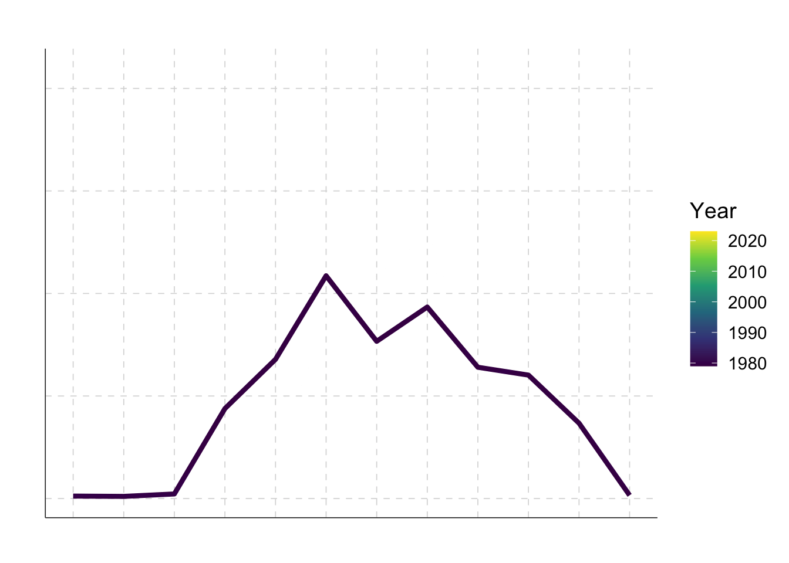
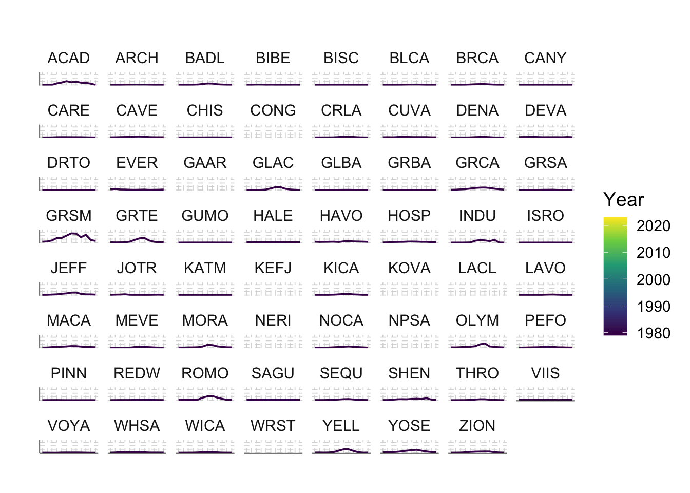
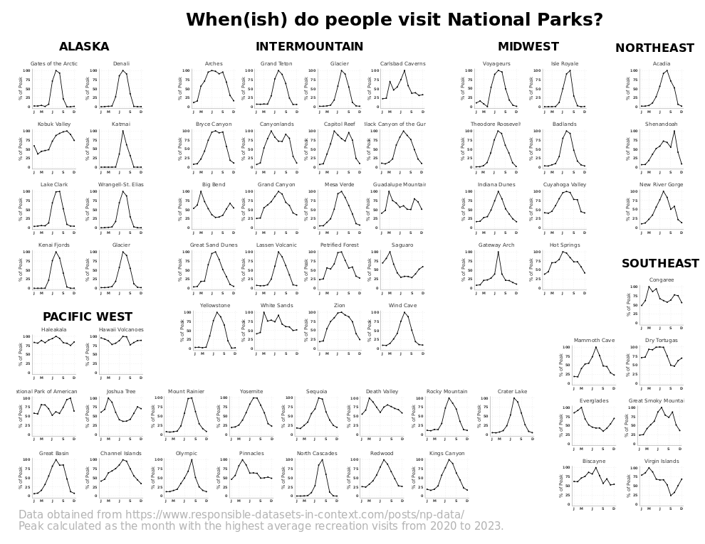

Importing fonts may take a few minutes, depending on the number of fonts and the speed of the system.
Continue? [y/n] US National Park Visits
fun
Sheng Long ![]()
As part of International Love Data Week, I participated in the Northwestern Visualization Contest1. I was not quite satisfied with the submission I produced, so I worked on it some more (creating both an R package for the NPS API wrapper and a more interactive view of the data.)
1 sadly didn’t get placed QwQ
Code
# set custom theme
# selected_months <- c("Jan", "Mar", "Jun", "Sep", "Dec")
selected_months <- c("J", "M", "J", "S", "D")
# define the custom theme
theme_custom <- function(base_size = 14) {
theme_minimal(base_size = base_size) +
theme(
# Text elements
axis.text.x = element_text(size = rel(1.1), color = "gray20", family = "Roboto", face="bold"),
axis.text.y = element_text(size = rel(1.1), color = "gray20", family = "Roboto", face="bold"),
axis.title = element_text(size = rel(1.2), color = "gray20", family= "Roboto"),
plot.title = element_text(
size = rel(1.3),
color = "gray20",
hjust = 0.5, # This centers the title
family = "Roboto"
),
# Grid customization
panel.grid.minor = element_blank(),
panel.grid.major.y = element_line(
color = "gray85",
linetype = "dashed",
linewidth = 0.3
),
panel.grid.major.x = element_line(
color = "gray85",
linetype = "dashed",
linewidth = 0.3
),
# Clean borders
axis.line = element_line(color = "gray20", linewidth = 0.3),
# Remove background elements
panel.background = element_blank(),
plot.background = element_blank()
)
}
theme_set(theme_custom())When(-ish) do people visit national parks?
We first load the data obtained from https://www.responsible-datasets-in-context.com/posts/np-data.
Code
df <- read.csv(file = "US-National-Parks_Use_1979-2023_By-Month.csv") %>%
tibble(.) %>%
mutate(ParkName = str_remove(ParkName, "NP.*$")) |>
mutate(ParkName = trimws(ParkName)) %>%
mutate(Region = trimws(Region))
knitr::kable(head(df))| ParkName | UnitCode | ParkType | Region | State | Year | Month | RecreationVisits | NonRecreationVisits | TentCampers | RVCampers | Backcountry |
|---|---|---|---|---|---|---|---|---|---|---|---|
| Acadia | ACAD | National Park | Northeast | ME | 1979 | 1 | 6011 | 15252 | 102 | 13 | 0 |
| Acadia | ACAD | National Park | Northeast | ME | 1979 | 2 | 5243 | 13776 | 53 | 8 | 0 |
| Acadia | ACAD | National Park | Northeast | ME | 1979 | 3 | 11165 | 15252 | 176 | 37 | 0 |
| Acadia | ACAD | National Park | Northeast | ME | 1979 | 4 | 219351 | 37657 | 1037 | 459 | 0 |
| Acadia | ACAD | National Park | Northeast | ME | 1979 | 5 | 339416 | 50616 | 3193 | 1148 | 0 |
| Acadia | ACAD | National Park | Northeast | ME | 1979 | 6 | 543205 | 70776 | 23821 | 9819 | 0 |
My first attempt was to plot a small multiples plot of the monthly average RecreationVisits to see what the general trend looks like:
Code
df %>% select(UnitCode, Year, Month, RecreationVisits) %>%
group_by(UnitCode, Month) %>%
summarise(avg_rec_visits = round(mean(RecreationVisits))) %>%
ggplot(aes(x = Month, y = avg_rec_visits)) +
geom_line() +
facet_wrap(~UnitCode) +
scale_x_continuous(breaks = 1:12, labels = 1:12) +
scale_y_continuous(labels = function(x) paste0(x/1000, "K")) +
theme_custom()
Clearly some of the really popular national parks (such as Yellow Stone YELL, Yosemite YOSE) have average monthly visits on a entirely different scale than some of the other national parks. To plot seasonal patterns better, we could first calculate the average monthly visits, then “scale” the monthly visits to be percentage of the maximum average monthly visit.
Code
df %>% select(UnitCode, Year, Month, RecreationVisits) %>%
group_by(UnitCode, Month) %>%
summarise(avg_rec_visits = round(mean(RecreationVisits))) %>%
group_by(UnitCode) %>%
mutate(pct_of_max = avg_rec_visits / max(avg_rec_visits)) %>%
ggplot(aes(x = Month, y = pct_of_max)) +
geom_line() +
facet_wrap(~UnitCode) +
scale_x_continuous(breaks = 1:12, labels = 1:12) +
theme_custom()
A part of me wants to create a joy plot/ridge line version of this graph but that’s a challenge for later after I figure out how to use OJS with Quarto…
This graph gives a better sense of what are the seasonal variations in visit patterns across national parks. But it also glosses over a lot of details happening over the years. That’s when I thought maybe an animated version of the monthly visit data across the years could be something cool to try out.
Animating things
First, if we were to plot everything out all at once, what would it look like?
Code
df %>%
ggplot(aes(x = Month, y = RecreationVisits, color = Year, group = Year)) +
geom_line() +
facet_wrap(~UnitCode) +
scale_x_continuous(breaks = 1:12, labels = 1:12) +
scale_color_viridis_c() +
theme_custom()
We can make it animated by using the gganimate package. Let’s first start with a single national park, say Acadia ACAD:
Code
df %>% filter(ParkName == "Acadia") %>%
ggplot(aes(x = Month, y = RecreationVisits, color = Year, group = Year)) +
geom_line(linewidth=1.5) +
scale_color_viridis_c()+
scale_x_continuous(breaks = 1:12, labels = 1:12) +
scale_y_continuous(labels = function(x) paste0(x/1000, "K")) +
labs(title = 'Year: {frame_time}') +
transition_time(Year) +
shadow_mark(past = T, future = F, alpha = 0.1) +
theme_custom()
We can also do this for the entire set of national parks:
Code
df %>%
ggplot(aes(x = Month, y = RecreationVisits, color = Year, group = Year)) +
geom_line() +
facet_wrap(~UnitCode) +
scale_x_continuous(breaks = 1:12, labels = 1:12) +
scale_color_viridis_c() +
scale_y_continuous(labels = function(x) paste0(x/1000, "K")) +
labs(title = 'Year: {frame_time}') +
transition_time(Year) +
shadow_mark(past = T, future = F, alpha = 0.1) +
theme_custom()
There are a lot of things happening at the same time … What if I want to identify outliers? What if I want to know whether geographically close national parks are going to have similar visitation patterns? This is why I built the interactive version.
Final submission

Conclusions
The national park services provide a rich set of publicly available data and interesting APIs. One could stay in the relam of R and use packages like leaflet to plot things like locations of national parks. The National Park Service also has its official API as well as tools that allow for map making (NPMap.js) and even icons designed specifically for NPS2? I am very pleasantly surprised to have found all this information.
2 https://github.com/nationalparkservice/symbol-library
Reuse
Citation
BibTeX citation:
@online{long2025,
author = {Long, Sheng and Long, Sheng},
title = {US {National} {Park} {Visits}},
date = {2025-10-14},
url = {https://mika-long.com/posts/national%20park%20vists/},
langid = {en}
}
For attribution, please cite this work as:
Long, Sheng, and Sheng Long. 2025. “US National Park
Visits.” October 14, 2025. https://mika-long.com/posts/national%20park%20vists/.